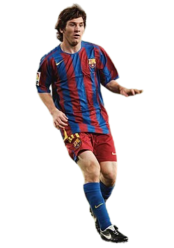

Regate
Messi a lo largo de la historia del futbol, ha sido reconocido como uno de los mejores regateadores que ha podido presenciar el deporte, se ha caracterizado por poder dejar atras facilmente a sus rivales con sus toques unicos y especiales.

Messi a lo largo de la historia del futbol, ha sido reconocido como uno de los mejores regateadores que ha podido presenciar el deporte, se ha caracterizado por poder dejar atras facilmente a sus rivales con sus toques unicos y especiales.
Además de ser un goleador nato, Messi ha demostrado tener un repertorio y un pase letal capaz de penetrar cualquier defensa para que sus compañeros puedan poner un tanto más en el marcador con una facilidad poco vista.
Su capacidad de definir frente al arco nunca ha sido un gran problema para él, siempre destacó en su templanza y calma en momentos donde cualquier otro jugador podría caer ante la presión, mientras que él muy pocas veces se vio afectado por el terreno, ambiente, jugador o cualquier hinchada que tuviera delante.